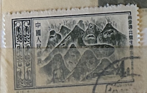
| SOURCE | TITLE| IMAGE MATCH | click to source page |
| Xabusiness.com | S16 Scott 295-298 Pictorial Reproductions from Bricks of East Han Dynasty - China Stamps | 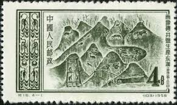 |
| eBay | China 3 Stamps 1956. (1) | eBay | 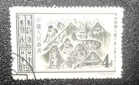 |
| Todocolección | china. arte rupestre. 1956. yt-1081. - Compra venta en todocoleccion | 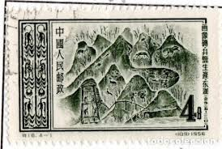 |
| eBay | 1956 China Stamp, Scott 295-298 MNH | eBay | 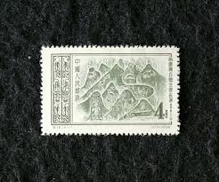 |
| HipStamp | China Stamp-1956-Sc#295-8 Tung HAN Dynasty-Murals ; Cto-Hing-Stamps:.S16 | Asia - China, General Issue Stamp / HipStamp | 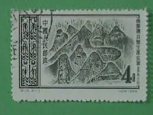 |
| Shutterstock | 4,831 Han Dynasty Royalty-Free Images, Stock Photos & Pictures | Shutterstock | 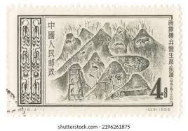 |
| Osta | Hiina 1956.soola tootmine Han dünastia ajal (227388694) - Osta.ee | 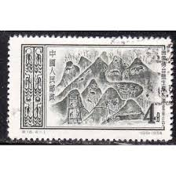 |
| Shutterstock | 중국 PRC - 1956년 10월 1일: 스톡 사진 2196261875 | Shutterstock | 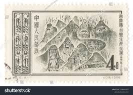 |
| ZARINA.UA | 本物保証，新作登場 1円～ 未使用 中国切手 紀109 遵義会議30周年 | 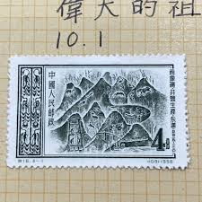 |
| Jimdo | 四川の調味料 - 本格四川料理｜小平市｜宴会予約受付中 | 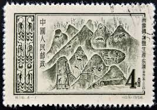 |
| 고려우표사 | 고려우표사 | 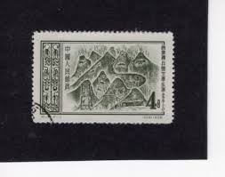 |
| Todocolección | 1962 - china - republica popular - edificios hi - Buy Antique stamps of China on todocoleccion | 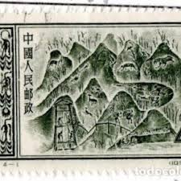 |
| kingstonimperial.com | 中国特殊切手 特16 画像住宅農作亜東書店4枚セット耳付 | 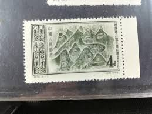 |
| Margipood | China - Page 2 of 44 - Margipood | 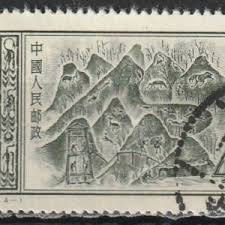 |
| 百度一下 | 汉代画像砖墓_百度百科 | 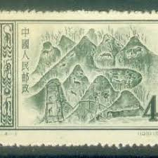 |
| 7788收藏 | T59寓言刻舟求剑、信销邮票全套中上品邮531-新中国邮票-7788旧书网 | 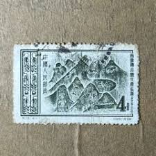 |
| 麦稀奇 | 特16 4-1 井盐生产数字边- 洪涛臻品微拍- 洪涛臻品微拍- 麦稀奇 | 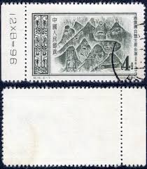 |
| 知乎 | 这种砖上了中学课本，可它藏着的小秘密大多数人没注意到- 知乎 | 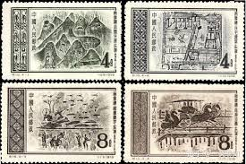 |
| Stamp Community Forum | Pottery, Ceramics, Porcelain, And Other Clayware - Page 20 - Stamp Community Forum | 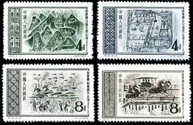 |
| eBay | China S16 Pictorial Reproductions from East Han Dynasty Set of 4v - Used (SL143) | eBay | 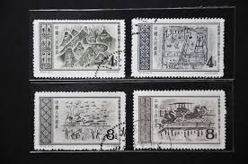 |
| 人民网 | 回顾历年精品“狗票” 您最爱哪一枚？【6】--书画--人民网 | 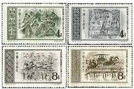 |
| eBay.de | Postfrische Briefmarken aus China mit Kunst-Motiv als Satz online kaufen | eBay.de | 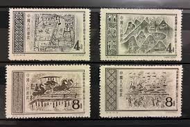 |
| eBay | China PRC Stamps Scott 295-298 1956 Murals Tung Han F/VF used full set A6256-795 | eBay | 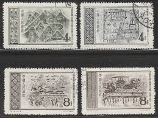 |
| Taobao.com | 淘宝画像-淘宝画像促销价格、淘宝画像品牌- 淘宝 | 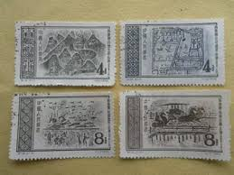 |
| 爱藏网 | 特种邮票特16 东汉画像砖-爱藏网 | 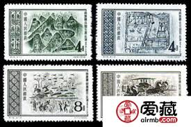 |
| Yahoo! JAPAN | Yahoo!オークション - 未使用 中国切手 特3 1952 偉大なる祖国第1次 特... | 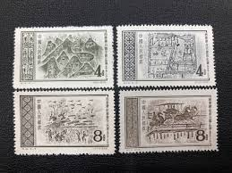 |
| eBay | Art, Artists Black Chinese Stamps for sale | eBay | 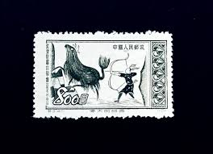 |
| eBay | CHINA TAIWAN 1256 - Opening of the Cross Island Highway (pb88535) | eBay | 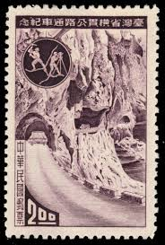 |
| eBay | Blue Souvenir Sheet Japanese Stamps for sale | eBay | 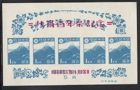 |
| 百度 | 东汉画像砖_百度百科 | 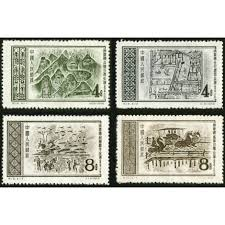 |
| Xabusiness.com | R29-5 Scott 2953-55 The Great Wall (Ming Dynasty) - China Stamps | 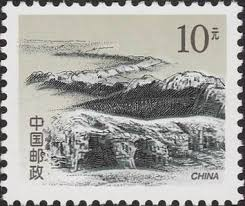 |
| HipStamp | Japan 10 Different Metal Engraving Cacheted First Day Covers | Asia - Japan, General Issue Stamp / HipStamp | 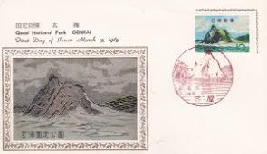 |
| us-china-stamps.com | PR China 1958 S27 Forestry construction set 8 CTO S29 Aviation Sports set 11 CTO | 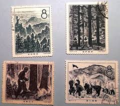 |
| Alamy | Chinese landscape, postage stamp, China Stock Photo - Alamy | 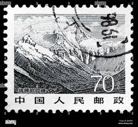 |
| Etsy | Ancient Chinese Argeological Tresures,3 Stamps 1953 -1954.,philatelia in China,postage Stamps - Etsy | 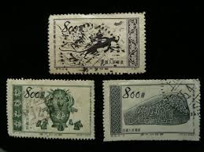 |
| eBay | 1936 Republic of China Postal 40th Anniversary Unissued Souvenir Sheet Very Rare | eBay | 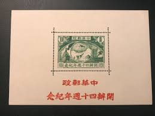 |
| Find Your Stamps Value | Great Wall: Huangyaguan - 万里长城: 黄崖关30f Yellow & black stamp price, value | 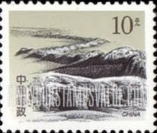 |
| Find Your Stamps Value | Cross Island Highway, Taiwan - 穿过台湾的高速公路40c Green stamp price, value | 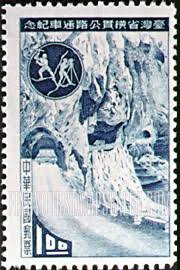 |
| eBay | Czechoslovakia - 1969 The 20th Anniversary of Tatra National Park | eBay | 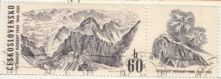 |
| eBay | Used Nature Chinese Stamps for sale | eBay | 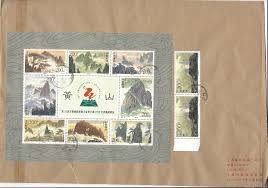 |
| GetArchive | 90 Mogao cave paintings, China Images: PICRYL - Public Domain Media Search Engine Public Domain Search | 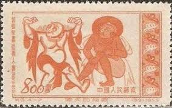 |
| 爱藏网 | T53桂林邮票价格T53桂林山水大版票价格-爱藏网 | 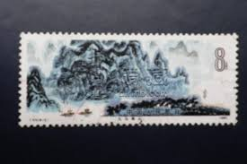 |
| eBay | 1960 Taiwan/China group of 4 Stamps/Used #393st | eBay | 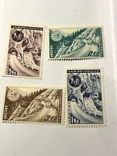 |
| eBay | China Taiwan Paintings Palace museum 3Pcs strip set, 1966, SC- 1479~82, MNH OG | eBay | 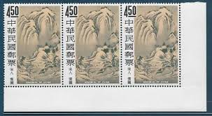 |
| eBay | China PRC Scott # 151, 152, 154 - MNH-NG - CV=$6.75 | eBay | 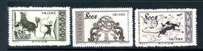 |
| eBay | Japanese Occupation Burma stamps 1942 SG J54d PAIR without ovpt Ovpt MNH VF | eBay | 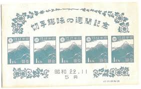 |
| eBay | Japan #178 Mint Hinged WDWPhilatelic (W8D) (7/25) | eBay | 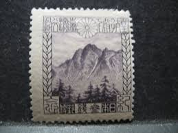 |
| HipStamp | Worldwide Stamps Online / HipStamp | 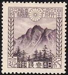 |
| eBay | Signed Calves - Napoleon No. 12c Dark Green s. Green Used Diamond PC (au filet) | eBay | 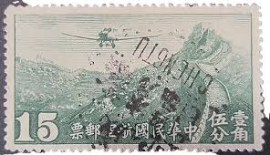 |
| Poppe Stamps | Poppe Stamps: China (Communist), 1981, 3112, Mountains - stamps for sale by theme and country | |
| eBay | Black Postage Chinese Stamps for sale | eBay | |
| eBay | 1953 PRC China Sc#191 (2) MNG VF | eBay | |
| HipStamp | China Stamp:1952,Sc# 151-4- Mother Countries 1st Series::stamp Mnh-Set. | Asia - China, General Issue Stamp / HipStamp | |
| eBay | Japan SC 395 NGAI (4eka) | eBay | |
| Xabusiness.com | China stamps of mountain | |
| eBay | David Semsrott Stamps | eBay Stores | |
| eBay | Japan 1969 national treasure Sesshu painting MNH | eBay | |
| eBay | China Lot 36 - Postage: (Stamp details below) 2023 Scott catalog $29.25 | eBay | |
| Freestampcatalogue.com | Stamps from Taiwan - Freestampcatalogue.com - The free online stampcatalogue with over 500.000 stamps listed. |